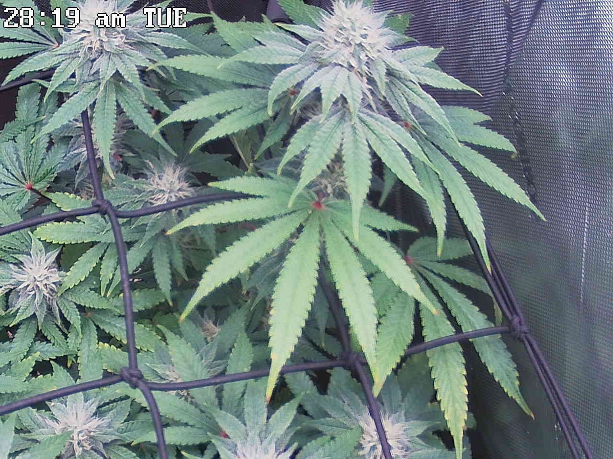
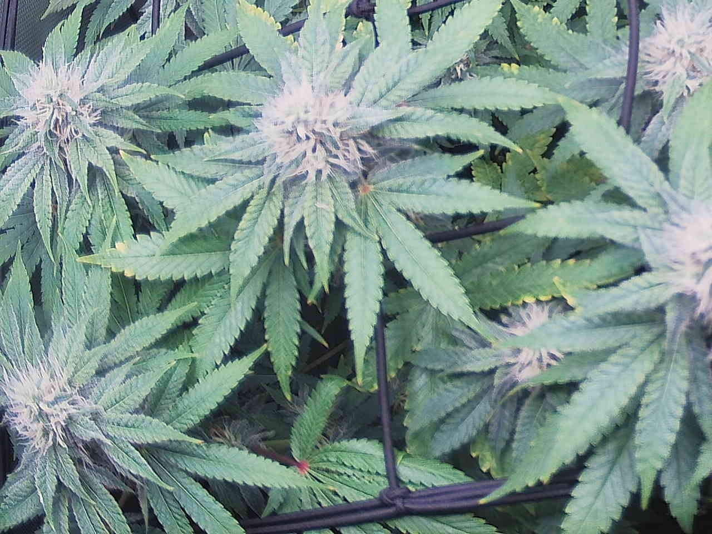
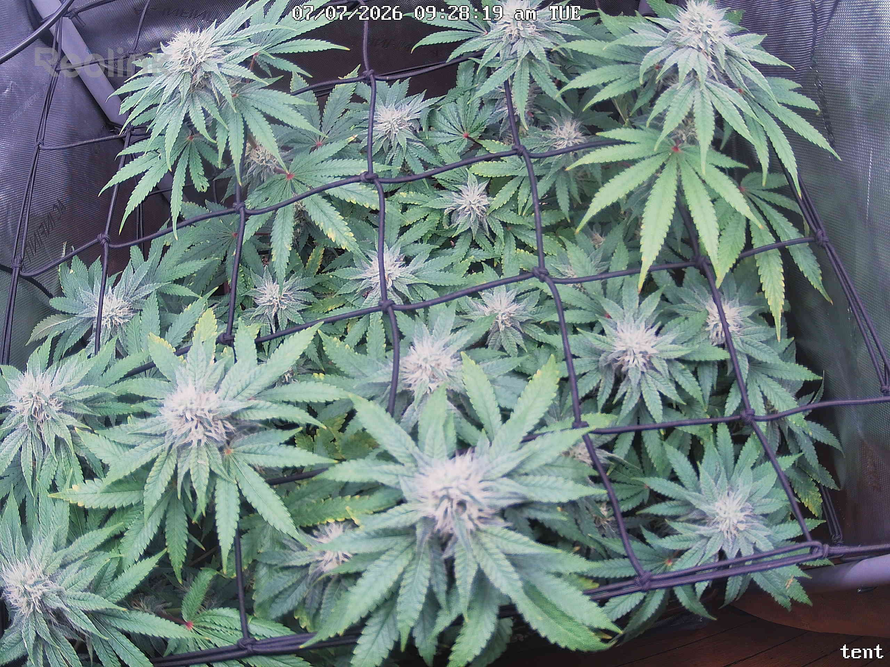
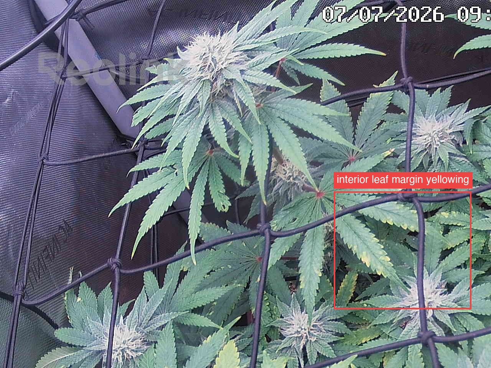
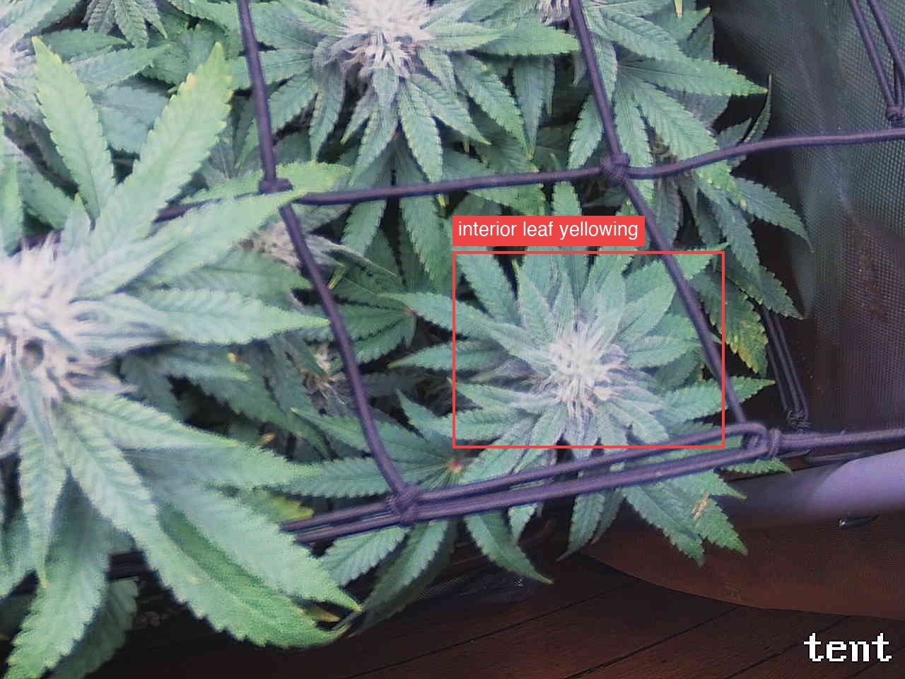

Per-quadrant analysis — the canopy shot was split into a 2x2 grid and each region compared against the previous day.
The plant is healthy and on-track for mid-flower (roughly week 6–8): all four quadrants show canopy fill-in versus 7/02, fattening colas, and increased trichome frost with white/intact pistils, and no quadrant reports webbing, stippling, powder, gray mush, droop, or bleaching. The one recurring issue, flagged ATTENTION in top-left (interior fan-leaf margin yellowing, center-right ~78,65) and bottom-right (interior/mid-canopy leaflet yellowing, ~mid-tile under the net), is margin-and-tip yellowing confined to older, shaded interior leaves and absent from the tops and new growth — consistent with either stage-normal senescence/mobile-nutrient draw-down or a potassium-type edge burn, which a photo cannot distinguish. The day-over-day trend is that this yellowing is marginally more visible than 7/02 (notably in the bottom-right quadrant, previously uniformly deep green there), while top-right and bottom-left show the same pattern as a stable/resolving tip fade rather than anything climbing into the canopy tops. Single most important action: track the interior yellowing over the next few check-ins for spread toward upper leaves or a shift from margin-limited to interveinal, which would separate benign fade from an active deficiency; no intervention is warranted yet.
Bud sites (whole plant, estimate): 17-27

Bud sites: 5-8
Bud sites: 5-8
Bud sites: 4-6

07-organic-living-soil).